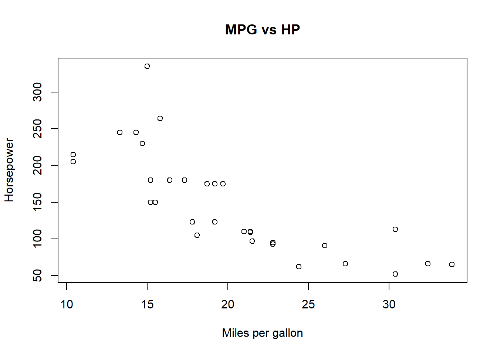
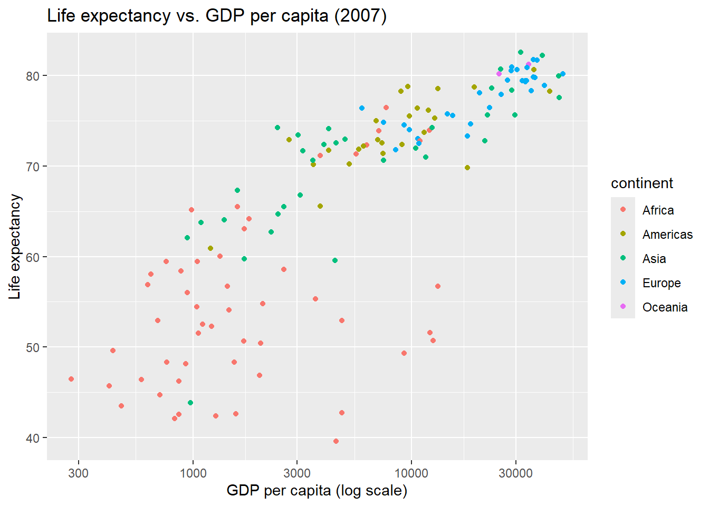

sum(1:10)[1] 55This handout introduces R Markdown for writing reproducible homework and reports. Students will learn how to combine text, code, and results in one file and how to knit to HTML/PDF/Word.
R Markdown lets you write narrative text (using Markdown) and run R code chunks whose output (tables/plots) appears in the same document. This is perfect for homework, replication, and project reports.
Mini example:
sum(1:10)[1] 55The result appears inline below the code when you knit.
Every .Rmd/.qmd has three parts:
--- at the top): metadata & output format.---
title: "Homework 1"
author: "Student Name (s1234567)"
date: "2025-11-12"
format: html
---# H1, ## H2, ### H3*italics*, **bold**, `code`- bullets; 1. numbered[text](https://example.com)Use triple backticks and {r}:
::: {.cell}
```{.r .cell-code}
summary(mtcars)
```
::: {.cell-output .cell-output-stdout}
```
mpg cyl disp hp
Min. :10.40 Min. :4.000 Min. : 71.1 Min. : 52.0
1st Qu.:15.43 1st Qu.:4.000 1st Qu.:120.8 1st Qu.: 96.5
Median :19.20 Median :6.000 Median :196.3 Median :123.0
Mean :20.09 Mean :6.188 Mean :230.7 Mean :146.7
3rd Qu.:22.80 3rd Qu.:8.000 3rd Qu.:326.0 3rd Qu.:180.0
Max. :33.90 Max. :8.000 Max. :472.0 Max. :335.0
drat wt qsec vs
Min. :2.760 Min. :1.513 Min. :14.50 Min. :0.0000
1st Qu.:3.080 1st Qu.:2.581 1st Qu.:16.89 1st Qu.:0.0000
Median :3.695 Median :3.325 Median :17.71 Median :0.0000
Mean :3.597 Mean :3.217 Mean :17.85 Mean :0.4375
3rd Qu.:3.920 3rd Qu.:3.610 3rd Qu.:18.90 3rd Qu.:1.0000
Max. :4.930 Max. :5.424 Max. :22.90 Max. :1.0000
am gear carb
Min. :0.0000 Min. :3.000 Min. :1.000
1st Qu.:0.0000 1st Qu.:3.000 1st Qu.:2.000
Median :0.0000 Median :4.000 Median :2.000
Mean :0.4062 Mean :3.688 Mean :2.812
3rd Qu.:1.0000 3rd Qu.:4.000 3rd Qu.:4.000
Max. :1.0000 Max. :5.000 Max. :8.000
```
:::
:::You can run chunks with the green play button or knit the whole document.
If you want to knit to PDF, install TinyTeX once:
install.packages("tinytex"); tinytex::install_tinytex()You can control what shows in the final document using chunk options.
| Option | Example | What it does |
|---|---|---|
echo |
{r, echo=FALSE} |
Hide code, show results |
eval |
{r, eval=FALSE} |
Show code, don’t run it |
message |
{r, message=FALSE} |
Hide package messages |
warning |
{r, warning=FALSE} |
Hide warnings |
include |
{r, include=FALSE} |
Run but hide code and output |
Example:

plot(mtcars$mpg, mtcars$hp,
xlab = "Miles per gallon",
ylab = "Horsepower",
main = "MPG vs HP")
library(knitr)
kable(head(mtcars), caption = "First rows of mtcars")| mpg | cyl | disp | hp | drat | wt | qsec | vs | am | gear | carb | |
|---|---|---|---|---|---|---|---|---|---|---|---|
| Mazda RX4 | 21.0 | 6 | 160 | 110 | 3.90 | 2.620 | 16.46 | 0 | 1 | 4 | 4 |
| Mazda RX4 Wag | 21.0 | 6 | 160 | 110 | 3.90 | 2.875 | 17.02 | 0 | 1 | 4 | 4 |
| Datsun 710 | 22.8 | 4 | 108 | 93 | 3.85 | 2.320 | 18.61 | 1 | 1 | 4 | 1 |
| Hornet 4 Drive | 21.4 | 6 | 258 | 110 | 3.08 | 3.215 | 19.44 | 1 | 0 | 3 | 1 |
| Hornet Sportabout | 18.7 | 8 | 360 | 175 | 3.15 | 3.440 | 17.02 | 0 | 0 | 3 | 2 |
| Valiant | 18.1 | 6 | 225 | 105 | 2.76 | 3.460 | 20.22 | 1 | 0 | 3 | 1 |
You can insert values directly in sentences using \(`r\{var\}`\):
The dataset has 32 rows and 11 columns.
Choose formats in the YAML header:
format:
html: default
pdf: default
docx: defaultKnit will produce the selected formats (you can pick one or many).
data/survey.csv), not C:/….# when needed.Submission policy (suggested): Upload both the source (.Rmd/.qmd) and the knitted output (.html or .pdf). Name them clearly, e.g. HW1_YourName.qmd and HW1_YourName.html.
Question: Using the
gapminderdataset, what is the relationship between GDP per capita and life expectancy across continents in 2007?
library(ggplot2)
library(gapminder)
gapminder_2007 <- subset(gapminder, year == 2007)
ggplot(gapminder_2007, aes(gdpPercap, lifeExp, color = continent)) +
geom_point() +
scale_x_log10() +
labs(x = "GDP per capita (log scale)", y = "Life expectancy", title = "Life expectancy vs. GDP per capita (2007)")
Tip: You can also add theme_minimal() if you like cleaner styling.
install.packages("packagename") in the Console, then knit again.here::here("data","file.csv") or put data in a data/ folder next to the .qmd.**bold**, *italics*, `inline code`- item or 1. item::: {.cell}
```{.r .cell-code}
# your code
```
:::[Quarto](https://quarto.org) / [R Markdown book](https://bookdown.org/yihui/rmarkdown/)tidyverse, gapminder, knitr, tinytex (optional)..qmd + .html to LMS.